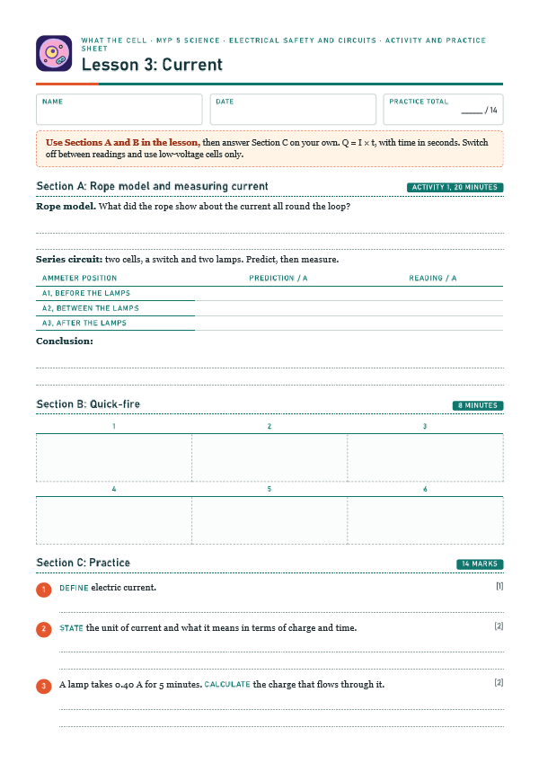

By the end of the lesson you can
- Define current as the rate of flow of charge, and give its unit
- Use Q = I × t to calculate charge, current or time
- Connect an ammeter correctly, in series
- Explain why the current is the same all round a single loop
Keys: arrows or a presentation clicker move the slides, F for full screen. Slides with a red dot have a video or simulation.
Videos (all 5 minutes or less)
- 3:23
Conventional current and electron flow
The Engineering Mindset. Which way electrons really move, and why diagrams use conventional current. Slide 10.
- 4:28
Current
FuseSchool. Current as a flow of charge, measured in amps, and why it is the same all round a loop. Slide 11.
Simulations
- Lab
Circuit Practicals Lab: series and parallel
What the Cell. Read the ammeters at every point in a series circuit, add a third lamp, and unscrew one to see what happens to the current everywhere.
- PhET
Circuit Construction Kit: DC
PhET, University of Colorado Boulder. Build a loop, show the electrons and compare two ammeters.
Print and practise

Activity and practice sheet
Used in the lesson’s activities, with practice questions. Your teacher has the answers.
Download (PDF)Lesson 3 slides
All 23 slides in one file, to read again or print. The video buttons on the slides open YouTube.
Download the slides (PDF)Revising? The Revision tab on the unit page has the unit notes and review.
Notes: Current
Current is a flow of charge
Current is the rate of flow of charge: how much charge passes a point each second. It is measured in amperes (A); 1 A is 1 coulomb per second. 1 mA = 0.001 A.
The current equation
Q = I × t: charge (C) = current (A) × time (s). Rearranged, I = Q / t and t = Q / I. Always convert minutes to seconds.
The ammeter
An ammeter measures current. It is connected in series, in the loop, so all the current flows through it, and it has a very low resistance so it does not change the current.
Same everywhere in a loop
In a single loop the current is the same at every point, before and after each lamp. Lamps transfer energy, not charge, and charge is conserved.
Conventional current
Circuit diagrams show current flowing from + to minus. In metal wires the moving charges are electrons, which flow the other way. The rule was agreed before electrons were discovered.
Slow electrons, instant light
Electrons drift at around 0.1 mm per second, but a light comes on at once because the wire is already full of electrons and they all start moving together.
Key words
| current (I) | the rate of flow of charge, in amperes (A) |
|---|---|
| ampere (A) | 1 coulomb per second |
| Q = I × t | charge (C) = current (A) × time (s) |
| ammeter | a meter that measures current; connected in series |
| in series | one after another in the same loop |
| conventional current | drawn from + to minus; electrons actually flow the other way |
| drift | the slow average movement of electrons along a wire |